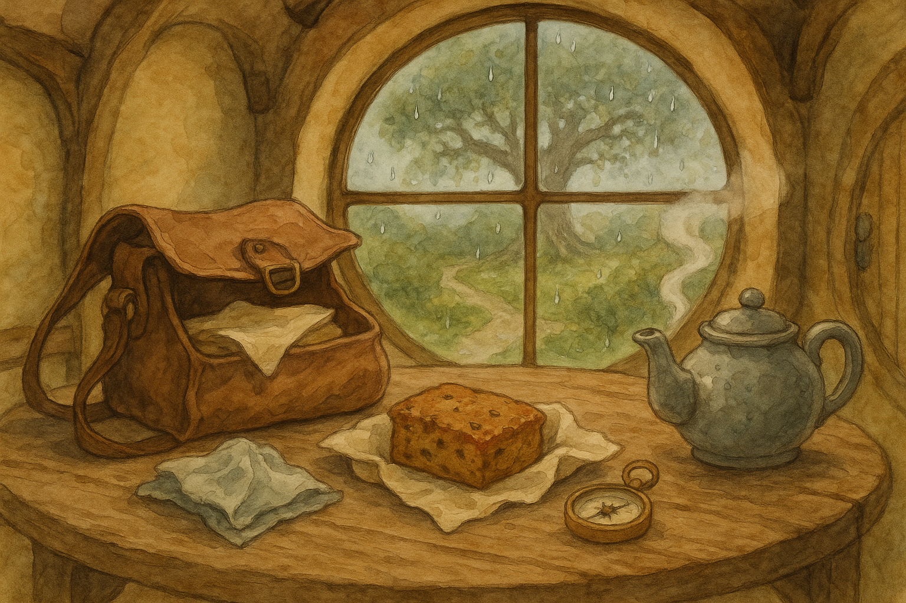

The rain arrived early and went about its business very seriously, tapping at the windows and making the lane shine like a ribbon. It did not feel like weather for heroics — and yet I found myself tidying a small satchel all the same.
A handkerchief, a bit of seed-cake wrapped properly, a little compass that has no business being in a hobbit kitchen — and my teacup, of course, for courage. It is a funny thing, but in Middle Earth the Road often begins long before one steps outside. It begins when you choose to be ready.
I only meant to go as far as the hedge and back, to see whether the Party Tree had shrugged off the last of winter. Still, as I tightened the satchel’s buckle, I remembered something I once learned the hard way: "There is nothing like looking, if you want to find something." Even on a wet Monday, a hobbit may look — and sometimes that is adventure enough.
Filed under: Middle Earth • Written at Bag End